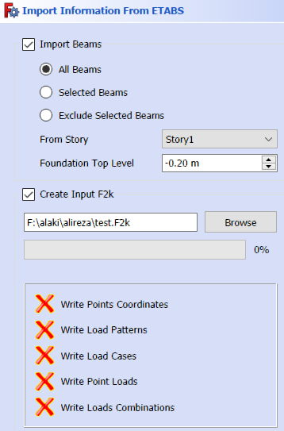

ورود مدل به داخل نرم افزار
با زدن آیکن ایتبز پنجره زیر برای کاربر نمایش داده میشود. قبل از این کار سازه حتما باید آنالیز شده باشد، نیاز نیست که کار طراحی انجام شده باشد.

ورود تیرها و ستونها
شما میتوانید تیرهای یک طبقه را به داخل مدل فری کد وارد کنید. برای این کار میتوانید طبقه مورد نظر خود را از لیستانتخاب کنید.
سه گزینه برای تیرها داریم:
- همه تیرها: همه تیرهای طبقه را وارد میکند
- تیرهای انتخاب شده: فقط تیرهای انتخاب شده در آن طبقه را وارد میکند
- همه تیرها بجز تیرهای انتخاب شده: به غیر از تیرهای انتخاب شده، تمام تیرهای یک طبقه را وارد میکند.
در این قسمت اگر نیم طبقه دارید، بهتر است در مدل ایتبز، تیرهای نیم طبقه را انتخاب کنید و از گزینه سوم استفاده کنید. چون در غیر اینصورت ممکن است چند تیر رویهم قرار بگیرند و در مراحل بعدی نرم افزار دچار ایراد شود. اگر هم چند تیر رویهم وارد مدل شد، میتوانید بعد از ورود مدل نیز براحتی آنها را پاک کنید.
ساخت فایل ورودی سیف
نرم افزار اسیف قادر است فایل ورودی سیف را به طور خودکار ایجاد نماید. یعنی دیگر کاربر نیاز به گرفتن خروجی فایل سیف از نرم افزار ایتبز نمی باشد. نرم افزار به طور خودکار تمام گره هایی که مقید شده اند را به همراه عکس العمل های آنها به داخل نرم افزار منتقل میکند. در این قسمت اگر فنداسیون در ۲ یا چند سطح باشد، تمام گره ها در ترازی که کاربر در کادر مربوطه وارد میکند ایجاد میشود.
بعد از تایید این پنجره عملیات انتقال مدل از ایتبز به داخل نرم افزار شروع میشود.